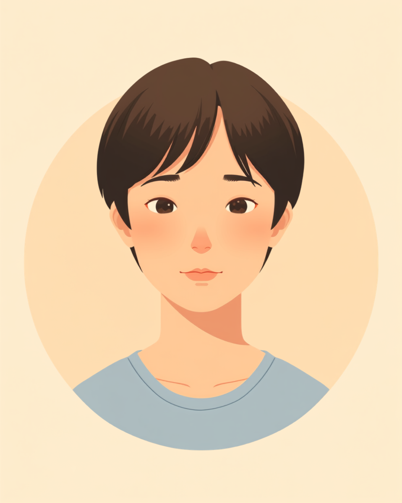

「あれ、どこ行った。えっと、これじゃない。あ、これか」。共有フォルダの中のファイルを探しながら、そう声に出していたらしい。「らしい」というのは、自分ではまったく気づいていなかったからだ。後ろの席の先輩に「独り言のラジオ、今日も絶好調だね」と笑われて、初めて自分がずっと喋っていたことを知った。
PR


 声が出ていることに、本人だけが気づいていない
声が出ていることに、本人だけが気づいていない
ファイルを探しながら、無意識に声が出ていたらしい

集中しているときに考えを声に出してしまうのは、決して珍しいことではないと言われています。本人に自覚がないまま周囲に聞こえていることも多いようです。まめざる
指摘された瞬間は、まず「え、いつから?」という戸惑いのほうが先に来た。恥ずかしい
先輩は悪気があって言ったわけではなさそうだった。むしろ「気にしなくていいよ」というニュアンスの笑いだった気がする。それでも、自分の知らないところで自分の声が同僚の耳に届いていた、という事実だけが妙に落ち着かなかった。
!
ここで紹介している内容は、複数の方の体験をもとに再構成しています。独り言の出方や、それをどう感じるかには個人差があります。
「経理をしていて、伝票の数字が合わないときによく『あれ、合わない。え、ここか。あー』って独り言が出るみたいで、隣の先輩に『独り言のBGMだね』って言われたことがあります。正直言うと、自分では全然自覚がなくて、指摘されるまで本当に知らなかったんです。3年くらい同じ席で仕事してるのに、今更気づかれたのかっていうのも地味にショックでした。」
30代・女性（ASD・経理職）
「集中すると声が出る」を、自分では止められない
調べてみると、集中している最中に考えを声に出してしまう傾向は、発達障害の特性のひとつとして説明されることがあるらしい。声に出すことで頭の中の情報を一度耳から入れ直し、整理しやすくしているという見方もあるようだ。ただ、こうした説明を知ったところで、次の瞬間にまた同じように声が出なくなるわけではない。
気づいているかどうかで、その後の対応が変わってくる
i
声のボリュームや頻度には個人差があり、周囲への聞こえ方も職場の環境によって変わります。ここで紹介している傾向は、あくまで一つの見方として参考にしてください。
「営業なので外回りの資料をよく探すんですけど、『えーっと、えーっと』って同じ言葉を繰り返しながら探してるのを同期に真似されたことがあります。悪気はないんだと思うんですけど、その場では笑って流しつつ、内心はめちゃくちゃ気まずかったです。半年くらい経った今も、たまに『えーっとキャラ』みたいに言われることがあって、正直まだちょっと引きずってます。」
20代・男性（ADHD・営業職）
相談の一コマ

相談者
探し物をしてるとき、無意識に喋ってるみたいで、後ろの席の先輩に真似されました。自分では全然気づいてなくて。
まめざる
それは驚きましたね。集中して探し物をしているとき、声に出すことで情報を整理しやすくなる人は結構いると言われています。
相談者
でも自分では止められないというか、そもそも喋ってる自覚がないので、治した方がいいのか迷います。
まめざる
無理に完全になくそうとするより、探し物のときはメモを横に置く、集中したい時間は少し離れた席で作業するなど、出にくくする工夫のほうが現実的かもしれません。
相談者
先に「声出ちゃうことがあります」って周りに伝えておくのもありですかね。
まめざる
それも一つの方法です。伝えておくだけで、聞こえたときの周りの受け止め方が変わることもありますよ。
直そうとするより、うまく付き合う工夫を考える
「治さなきゃ」と思えば思うほど、意識が独り言そのものに向いてしまって、かえって探し物や作業に集中できなくなることもある。完全になくすことを目標にするより、声が出やすい場面をあらかじめ把握して、そこだけ工夫してみるほうが続けやすいのかもしれない。
試してみやすい工夫
- 探し物のときは声に出す代わりに、付箋やメモに書き出してみる
- 集中したい作業の時間帯だけ、少し離れた席や会議室を使わせてもらう
- ノイズキャンセリングのイヤホンやマスクをつけておく
- 先に「集中すると声が出ることがある」と近くの人にだけ伝えておく
どれも「絶対に効く方法」というわけではなく、うまくいく人もいれば、あまり変わらないと感じる人もいるだろう。自分に合いそうなものを一つ試してみて、駄目なら別のものに変えるくらいの気持ちでいいのだと思う。
一人で抱えず、周りに伝えるという選択肢
「独り言が多い」という指摘は、悪意なく笑い話として消化されることもあれば、繰り返されるうちに本人の中でじわじわ重くなっていくこともある。もし気になる場合は、一人で抱え込まず、相談できる相手を持っておくといいかもしれない。
- 職場の信頼できる上司や先輩（配慮してほしい点を具体的に伝える）
- 産業医やカウンセラーなど、社内外の相談窓口
- 就労移行支援事業所など、職場での特性との付き合い方を一緒に考えてくれる機関
独り言の出方や感じ方には個人差があります。仕事に支障が出るほど気になる場合や、強いストレスにつながっている場合は、自己判断せず主治医や支援機関にご相談ください（2026年9月時点の情報です）。
気づかないうちに声が出ていたのは、サボっていたわけでも、だらしないわけでもありません。出やすい場面を知っておくだけで、次に指摘されたときの受け止め方は変わってきます。
よくある質問
Q. 独り言は発達障害の特性なんでしょうか。治すことはできますか。
集中しているときに考えを声に出してしまう傾向は、発達障害の特性のひとつとして説明されることがあります。ただし本人にとっては情報を整理する手段になっている場合もあり、完全に「治す」というより、出やすい場面を把握して工夫していく方向で考えられることが多いようです（2026年9月時点の情報です）。
Q. 独り言を先輩や同僚に指摘されたとき、何と説明すればいいですか。
「集中すると声が出てしまうことがあるみたいで、他意はないので気にしないでもらえると助かります」といった伝え方をする人が多いようです。無理に隠そうとするより、先に一言伝えておくことで、周囲の受け止め方が変わる場合もあると言われています。
Q. 独り言が出やすい場面には、何か傾向がありますか。
探し物をしているときや、複数の情報を同時に処理しようとしているときに出やすいという声が多いようです。声に出すことで頭の中の情報を整理し直している、という説明がされることもあります。
Q. 独り言を減らすために、自分でできる工夫はありますか。
探し物のときは口に出す代わりにメモに書き出す、集中したい作業の時間帯だけ席を離れる、マスクをつけておくなど、完全になくすというより出にくい環境を作る工夫が紹介されることがあります。効果の感じ方には個人差があります。
Q. 同僚の独り言が気になる場合、本人に注意してもいいのでしょうか。
本人が気づいていないことも多いため、頭ごなしに注意するより「集中してるときによく声出てるけど大丈夫?」というような、責めない伝え方が望ましいとされています。業務に支障が出るほど気になる場合は、上司や人事を交えて対応を相談する方法もあります。
止めようとするより、付き合い方を見つけるほうが現実的
この記事に、聞いてみたいことはありますか？
「自分の場合はどうなんだろう」と思ったことを、気軽に書いてみてください。いただいた質問は個別にお返事したうえで、匿名で記事にすることがあります。
PR


職場での自分の特性を、一緒に整理してみませんか
「治すべきかどうか」で一人で悩まなくても大丈夫です。mimemimeの無料相談は、今の困りごとの整理から一緒に始められます。
無料で話してみる
おのざる
mimemime代表。就労支援の現場経験をもとに、障がいのある方の働く不安に寄り添う記事を執筆。